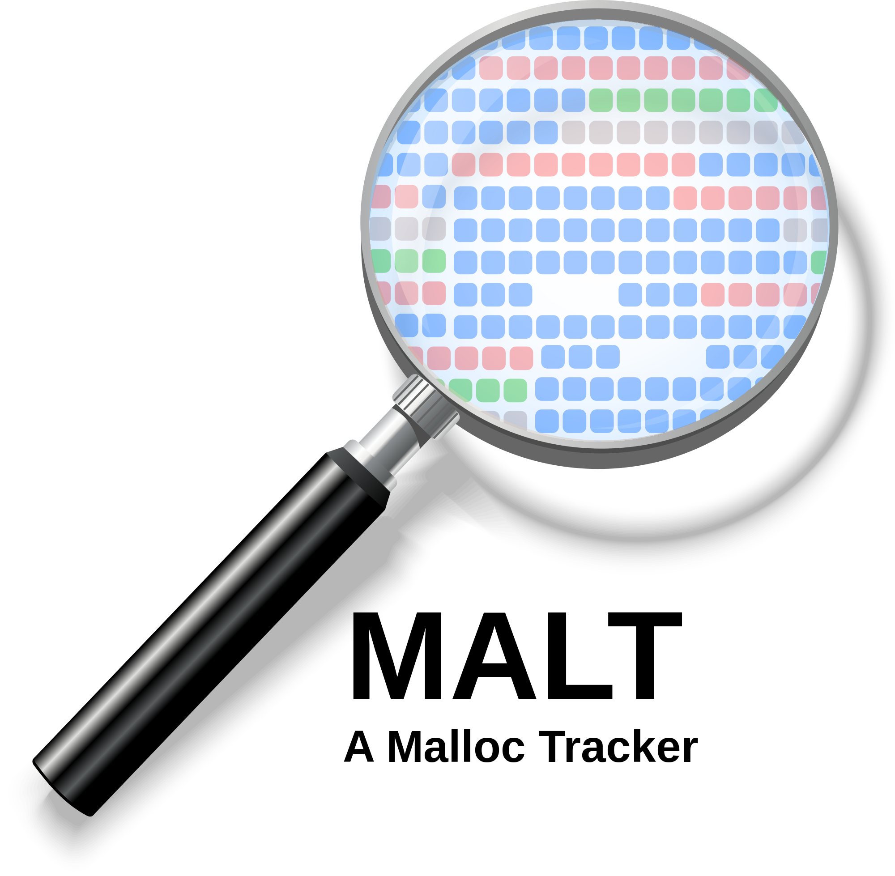
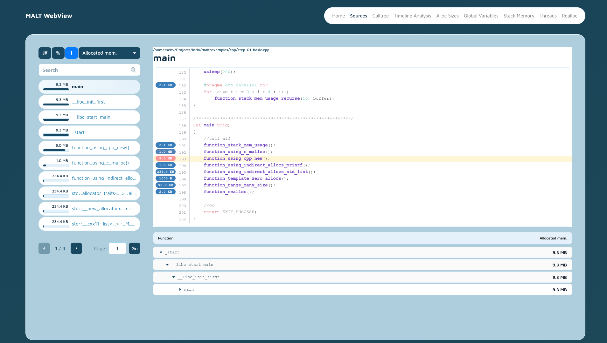

MALT documentation
{kind=link}

What is MALT ?
MALT is a memory tool to find where you allocate your memory. It also provides you some statistics about memory usage and help to find memory leaks.
It is done to be used on laguages : C, C++, Fortran, Rust, Python (expérimental).
It comes with a web-based graphical interface to navigate the profile :

First time here?
We have a few places for you to get started:
- Dependencies
Start by installing the required or optional dependencies.
- Installation
Follow the installation procedure.
- Basic usage
Make your first steps by using malt.
- Understanding the metrics
The metrics exported by malt.
- Informations
General informations about malt.
Advanced topics
- MPI
Using MALT for MPI applications.
- Using custom allocator
Using MALT with custom memory allocators.
- Sub-part of a program
Using MALT on a sub-part of your programe.
- Using -finstrument-functions
Using MALT with -finstrument-functions.
- Track out of memory
Using MALT to track out of memory on a program.
- Options
Using MALT options.
- Build options
Compiling MALT with extra build options.
- Packaging for distributions
Building packaging for common distributions.
External pointers
- Other tools
Discovering some other alternative tools.
- Other memory allocators
Discovering some alternative memory allocators.
- Documentation about memory
Documentation about memory managment.
For developpers
- How to debug MALT
Documentation about debugging MALT crashed.
- MALT project lifecycle
Documentation about lifecycle of MALT sources.